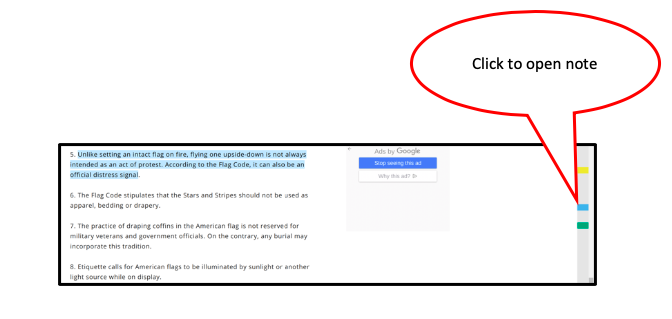

- A nub for each note appears in the gutter on the right side of your window.
- Clicking the nub opens and shows the associated note.
- The label you used to title the note also appears in the sidebar under the header “Notes”.
- To access the sidebar, click on the handle.
- Click the Notes header to show notes in this view.
- Clicking a particular note in the side bar will open the note and show its selection if there is one.
